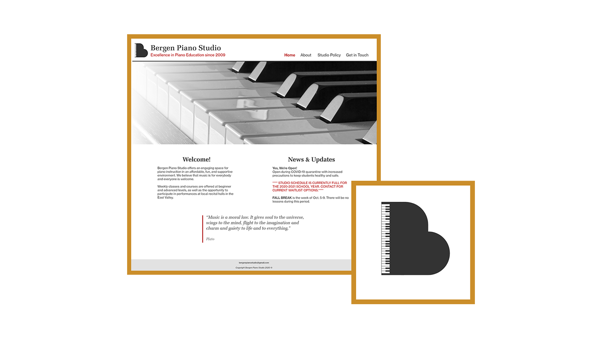
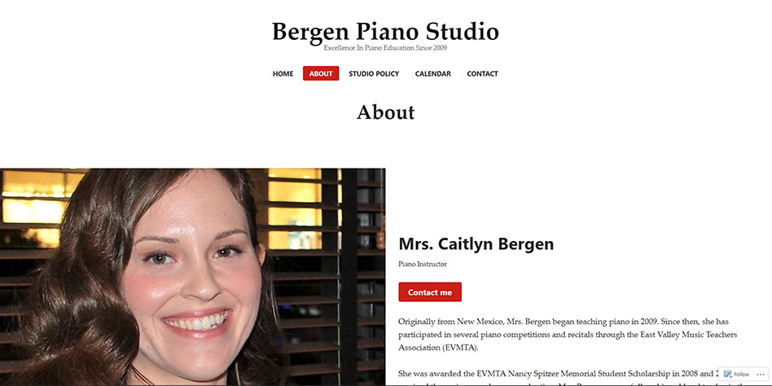
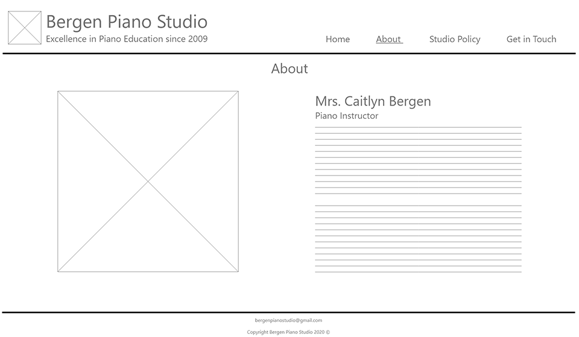
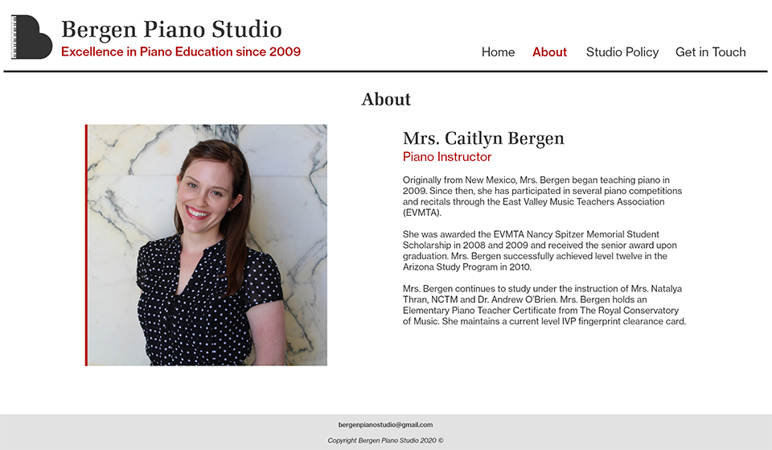
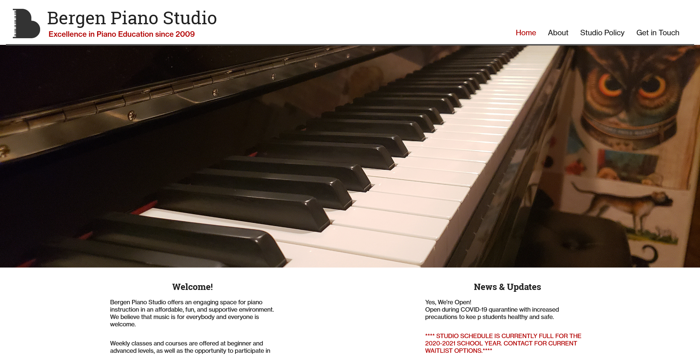

Bergen Piano Studio
Bergen Piano Studio's redesign was both a school and personal project. The owner of the studio is a good friend of mine and I'm proud to be doing this work for her! I designed for her a new logo, did some rebranding, and built her a new website from scratch.
Outline & Process
The original site for the studio was made in WordPress and suffers the many limitations present in "WYSIWYG" environments. The theme of the site is plain but not bad, but the scaling of page elements like the picture shown here are less than ideal. I set out to design a new layout that better fits current website trends and to refine the branding work of Bergen Piano Studio.
After jotting down some ideas on paper, I drew up wireframes for the new site. I moved things around to be more in proportion. For exmaple, scaling down the image of Mrs. Bergen and balancing it with the paragraph next to it brings the page some visual harmony and is much more pleasing to read.
Once the wireframes were complete, I went ahead and mocked up how the site would look if I kept the same general theming it had previously. I added a few color elements to give the page some more pop, such as the left border on the image. By client request and peer feedback, I'll be tweaking the final theming to be a little more friendly and approachable and I'm also working on tying in her teaching space into the website itself.
Final Result
Here's the finalized website. Click on the image to visit!